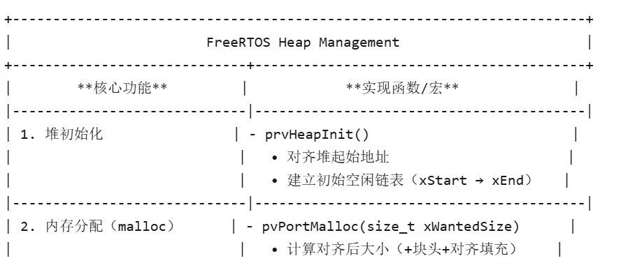

Freertos 之heap管理
引言：深入解析 FreeRTOS 堆管理机制——从 Heap_2 到 Heap_5 的设计与实现
在嵌入式实时操作系统（RTOS）中，动态内存管理 是影响系统稳定性和性能的关键因素之一。FreeRTOS 提供了多种堆（heap）管理方案（heap_1 至 heap_5），每种方案针对不同的应用场景优化，涉及内存分配策略、碎片控制、多内存区域支持等核心问题。
本文将聚焦 heap_2（最佳适应算法）、heap_4（首次适应算法 + 合并）和 heap_5（非连续内存支持），深入分析其设计思想、实现原理及适用场景。我们将从以下角度展开：
内存块的组织方式（如空闲链表结构、块头信息）；
分配与释放的算法细节（如最佳适应 vs. 首次适应、碎片合并机制）；
关键代码解析（如
pvPortMalloc、vPortFree和prvHeapInit的实现）；实战场景下的选择建议（如何根据硬件资源、任务模型选择最优堆方案）。
全文目录:
一、引言
动态内存管理的重要性
FreeRTOS堆管理方案概览
本文目标与结构
二、堆模块的核心意义
动态内存分配的基础功能
(1) 内核对象的内存来源
(2) 手动分配API（
pvPortMalloc/vPortFree）多策略支持与硬件适应性
(1) 5种堆方案的适用场景
(2) 资源受限与复杂内存布局的支持
三、堆实现方案对比
heap_2：最佳适应算法（不合并）
(1) 特点与原理
(2) 适用场景（固定大小对象）
heap_4：首次适应算法（带合并）
(1) 碎片控制机制
(2) 通用场景推荐
heap_5：非连续内存支持
(1) 多区域初始化（
vPortDefineHeapRegions）(2) 复杂硬件适配案例
四、关键实现机制解析
内存块结构与组织
(1) 块头（
BlockLink_t）的作用(2) 用户指针与块头地址转换
堆初始化机制
(1) 地址对齐实现
(2) 初始空闲链表的构建
内存分配流程（
pvPortMalloc）(1) 对齐调整与大小计算
(2) 空闲链表遍历策略（Heap_2 vs Heap_4/5）
(3) 块分割与剩余内存处理
内存释放流程（
vPortFree）(1) 块头定位与链表插入
(2) 相邻块合并（Heap_4/5）
五、总结
FreeRTOS堆管理的核心价值
开发者实践的关键要点
通过本文，读者不仅能理解 FreeRTOS 堆管理的底层机制，还能掌握在实际项目中优化内存使用、避免内存泄漏与碎片化的实用技巧。
一、heap模块的意义
FreeRTOS 中的 heap（堆） 是动态内存管理的核心机制，它平衡了 灵活性（动态分配）与 可靠性（实时性、碎片控制），是系统资源管理的基石。开发者需根据应用场景（如实时性要求、硬件资源）选择合适的堆方案，并合理配置堆大小以避免内存耗尽。其意义主要体现在以下几个方面：
1. 动态内存分配的基础
FreeRTOS 任务、队列、信号量、定时器等内核对象在运行时需要动态分配内存，堆是这些对象的内存来源。
开发者可以通过
pvPortMalloc()和vPortFree()等 API 手动申请/释放内存，类似标准 C 的malloc()和free()，但针对实时系统进行了优化。
2. 支持多种内存管理策略
FreeRTOS 提供了 5 种堆管理方案（heap1 ~ heap5），适应不同场景需求：
heap1~2：简单但非线程安全（仅适用于单任务或静态分配场景）。
heap3：封装标准库
malloc/free，牺牲确定性（依赖系统实现）。heap4~5：支持碎片整理、多线程安全，适合复杂应用（如 heap5 支持非连续内存块合并）。
3. 适应不同硬件限制
可配置堆大小（通过
configTOTAL_HEAP_SIZE），适用于资源受限的嵌入式设备（如 RAM 仅几 KB 的 MCU）。heap5 支持将非连续物理内存区域合并为逻辑堆，灵活利用碎片化内存。
4. 内核对象管理的底层支持
FreeRTOS 内核在创建任务、队列等对象时，自动从堆中分配所需内存（如任务栈、TCB 结构体）。
用户可通过重写
pvPortMalloc()实现自定义内存管理（如外接 SPI RAM）。

这张图体现了Heap的主要任务和对应函数,具体函数后面会讲到
二、heap不同实现方式效果的对比
本文会主要聚焦于heap2、3、5，这里按照特点，原理，适用场景做一个简单的对比
1.heap_2 - 最佳适应算法（不合并）
特点：
·支持分配和释放
·使用 最佳适应算法（Best Fit），空闲块按大小排序
·不合并相邻空闲块（会产生内存碎片）
·适用于 重复分配相同大小内存 的场景
实现原理：
·空闲块通过链表管理，按块大小升序排列
·分配时遍历链表，找到能满足需求的最小块
·释放时直接将块重新插入链表，不检查相邻块
适用场景：
·周期性创建/删除相同大小的任务或内核对象
·对分配速度要求高于内存效率的场景
2.heap_4 - 首次适应算法（带合并）
特点：
·支持分配和释放
·使用 首次适应算法（First Fit），空闲块按地址排序
·合并相邻空闲块（减少碎片）
·最通用的内存管理方案
实现原理：
·空闲块按内存地址顺序排列（非大小顺序）
·分配时找到第一个足够大的块
·释放时检查相邻块是否空闲，如果是则合并
适用场景：
·频繁分配/释放不同大小的内存
·长期运行且需要低碎片的系统
·大多数通用嵌入式应用的推荐选择
3.heap_5 - 支持非连续内存区域
特点：
·在 heap_4 基础上扩展，支持 多个非连续内存区域 组成堆
·适用于 分散内存（Scattered Memory） 的硬件
·需显式初始化内存区域（vPortDefineHeapRegions()）
实现原理：
·允许将多个物理上不连续的内存块作为逻辑堆使用
·每个区域需定义起始地址和大小
·内部使用与 heap_4 相同的算法（首次适应+合并）
适用场景：
·硬件具有多块独立内存（如 SRAM + SDRAM）
·需要灵活管理复杂内存布局的系统
三、内存分配功能的具体实现函数
任何heap模块的核心功能都是分配内存，并实现malloc和free。Heap的内存是以块状存储的
内存块结构：
typedef struct A_BLOCK_LINK {struct A_BLOCK_LINK *pxNextFreeBlock; // 指向下一个空闲块的指针size_t xBlockSize;// 当前块的大小（包括头部）} BlockLink_t;
1.内存块排序函数
{ \BlockLink_t * pxIterator; \size_t xBlockSize; \\xBlockSize = pxBlockToInsert->xBlockSize; \\/* Iterate through the list until a block is found that has a larger size */ \/* than the block we are inserting. */ \for( pxIterator = &xStart; pxIterator->pxNextFreeBlock->xBlockSize < xBlockSize; pxIterator = pxIterator->pxNextFreeBlock ) \{ \/* There is nothing to do here - just iterate to the correct position. */ \} \\/* Update the list to include the block being inserted in the correct */ \/* position. */ \pxBlockToInsert->pxNextFreeBlock = pxIterator->pxNextFreeBlock; \pxIterator->pxNextFreeBlock = pxBlockToInsert;
对于Heap2，存储块链头BlockLink_t，会不断向后遍历，直到找到一个存储块大于待插入块的，从而通过冒而泡排序从小到大链接所有块。
而对于Heap4/5，它们不会按照块的大小进行排序，而是按照地址进行排序。目的是检查相邻块是否可合并（通过地址连续判断）以减少碎片/解决内存块不连续问题
2、初始化函数
static void prvHeapInit( void ){BlockLink_t * pxFirstFreeBlock;uint8_t * pucAlignedHeap;/* Ensure the heap starts on a correctly aligned boundary. */pucAlignedHeap = ( uint8_t * ) ( ( ( portPOINTER_SIZE_TYPE ) & ucHeap[ portBYTE_ALIGNMENT ] ) & ( ~( ( portPOINTER_SIZE_TYPE ) portBYTE_ALIGNMENT_MASK ) ) );/* xStart is used to hold a pointer to the first item in the list of free* blocks. The void cast is used to prevent compiler warnings. */xStart.pxNextFreeBlock = ( void * ) pucAlignedHeap;xStart.xBlockSize = ( size_t ) 0;/* xEnd is used to mark the end of the list of free blocks. */xEnd.xBlockSize = configADJUSTED_HEAP_SIZE;xEnd.pxNextFreeBlock = NULL;/* To start with there is a single free block that is sized to take up the* entire heap space. */pxFirstFreeBlock = ( void * ) pucAlignedHeap;pxFirstFreeBlock->xBlockSize = configADJUSTED_HEAP_SIZE;
这个函数初始化堆的内存
（1）对齐起始地址（8字节）
对齐8字节地址可以使后续空间分配更简单
uint8_t *pucAlignedHeap = (uint8_t*)( ((portPOINTER_SIZE_TYPE)&ucHeap[portBYTE_ALIGNMENT]) &(~((portPOINTER_SIZE_TYPE)portBYTE_ALIGNMENT_MASK)) );
&ucHeap[portBYTE_ALIGNMENT]：从 ucHeap数组的 portBYTE_ALIGNMENT偏移处开始（跳过可能的未对齐部分）。
& ~portBYTE_ALIGNMENT_MASK：通过掩码操作将地址向下对齐到最近的对齐边界。
（2）初始化链头
xStart.pxNextFreeBlock = (void*)pucAlignedHeap; // 指向对齐后的堆起始地址xStart.xBlockSize = (size_t)0; // 头节点自身不参与分配
xStart作为空闲链表的虚拟头节点，其 pxNextFreeBlock指向第一个真实空闲块
（3）初始化初始空闲块
BlockLink_t *pxFirstFreeBlock = (void*)pucAlignedHeap; pxFirstFreeBlock->xBlockSize = configADJUSTED_HEAP_SIZE;// 整个堆作为一个大块pxFirstFreeBlock->pxNextFreeBlock = &xEnd;// 指向尾节点
对于heap2/4，整个堆作为一个大块：
xStart → [pxFirstFreeBlock: size=整个堆] → xEnd对于heap5，它会将几段内存块链起来：
xStart → [pxFirstFreeBlock: size=整个堆] → xEnd3.内存分配malloc函数
void * pvPortMalloc( size_t xWantedSize ){BlockLink_t * pxBlock, * pxPreviousBlock, * pxNewBlockLink;static BaseType_t xHeapHasBeenInitialised = pdFALSE;void * pvReturn = NULL;vTaskSuspendAll();{/* If this is the first call to malloc then the heap will require* initialisation to setup the list of free blocks. */if( xHeapHasBeenInitialised == pdFALSE ){prvHeapInit();xHeapHasBeenInitialised = pdTRUE;}/* The wanted size must be increased so it can contain a BlockLink_t* structure in addition to the requested amount of bytes. */if( ( xWantedSize > 0 ) &&( ( xWantedSize + heapSTRUCT_SIZE ) > xWantedSize ) ) /* Overflow check */{xWantedSize += heapSTRUCT_SIZE;/* Byte alignment required. Check for overflow. */if( ( xWantedSize + ( portBYTE_ALIGNMENT - ( xWantedSize & portBYTE_ALIGNMENT_MASK ) ) )> xWantedSize ){xWantedSize += ( portBYTE_ALIGNMENT - ( xWantedSize & portBYTE_ALIGNMENT_MASK ) );configASSERT( ( xWantedSize & portBYTE_ALIGNMENT_MASK ) == 0 );}else{xWantedSize = 0;}}else{xWantedSize = 0;}if( ( xWantedSize > 0 ) && ( xWantedSize <= xFreeBytesRemaining ) ){/* Blocks are stored in byte order - traverse the list from the start* (smallest) block until one of adequate size is found. */pxPreviousBlock = &xStart;pxBlock = xStart.pxNextFreeBlock;while( ( pxBlock->xBlockSize < xWantedSize ) && ( pxBlock->pxNextFreeBlock != NULL ) ){pxPreviousBlock = pxBlock;pxBlock = pxBlock->pxNextFreeBlock;}/* If we found the end marker then a block of adequate size was not found. */if( pxBlock != &xEnd ){/* Return the memory space - jumping over the BlockLink_t structure* at its start. */pvReturn = ( void * ) ( ( ( uint8_t * ) pxPreviousBlock->pxNextFreeBlock ) + heapSTRUCT_SIZE );/* This block is being returned for use so must be taken out of the* list of free blocks. */pxPreviousBlock->pxNextFreeBlock = pxBlock->pxNextFreeBlock;/* If the block is larger than required it can be split into two. */if( ( pxBlock->xBlockSize - xWantedSize ) > heapMINIMUM_BLOCK_SIZE ){/* This block is to be split into two. Create a new block* following the number of bytes requested. The void cast is* used to prevent byte alignment warnings from the compiler. */pxNewBlockLink = ( void * ) ( ( ( uint8_t * ) pxBlock ) + xWantedSize );/* Calculate the sizes of two blocks split from the single* block. */pxNewBlockLink->xBlockSize = pxBlock->xBlockSize - xWantedSize;pxBlock->xBlockSize = xWantedSize;/* Insert the new block into the list of free blocks. */prvInsertBlockIntoFreeList( ( pxNewBlockLink ) );}xFreeBytesRemaining -= pxBlock->xBlockSize;}}traceMALLOC( pvReturn, xWantedSize );}( void ) xTaskResumeAll();{if( pvReturn == NULL ){extern void vApplicationMallocFailedHook( void );vApplicationMallocFailedHook();}}return pvReturn;}/*--------------
函数分析：
（1）初始化检查
if( xHeapHasBeenInitialised == pdFALSE ){prvHeapInit();xHeapHasBeenInitialised = pdTRUE;}
if( ( xWantedSize > 0 ) &&(( xWantedSize + heapSTRUCT_SIZE ) >xWantedSize ) ){xWantedSize+= heapSTRUCT_SIZE;}
这一块的目的是加上头，从而计算需要真正需求大小
if( ( xWantedSize + ( portBYTE_ALIGNMENT - ( xWantedSize & portBYTE_ALIGNMENT_MASK ) ) )>xWantedSize ){xWantedSize+= ( portBYTE_ALIGNMENT - ( xWantedSize & portBYTE_ALIGNMENT_MASK ) );configASSERT(( xWantedSize & portBYTE_ALIGNMENT_MASK ) == 0 );}
这一块是补充对齐的空位：
·对齐算法：计算需要填充的字节数：portBYTE_ALIGNMENT - (size % alignment)；典型对齐值：8字节（32位系统）或 16字节（64位系统）
·断言检查：确保最终大小是对齐值的整数倍
（3）返回地址
pvReturn = ( void * ) ( ( ( uint8_t * ) pxPreviousBlock->pxNextFreeBlock ) + heapSTRUCT_SIZE );pxPreviousBlock->pxNextFreeBlock = pxBlock->pxNextFreeBlock;
·地址计算：
返回给用户的地址跳过块头（可用地址）：块起始地址 + heapSTRUCT_SIZE
·链表更新：
将目标块从空闲链表移除（前驱节点直接指向后继节点）
（4）块分割机制
if( ( pxBlock->xBlockSize - xWantedSize ) > heapMINIMUM_BLOCK_SIZE ){pxNewBlockLink = ( void * ) ( ( ( uint8_t * ) pxBlock ) + xWantedSize );xBlockSize = pxBlock->xBlockSize - xWantedSize;xBlockSize= xWantedSize;prvInsertBlockIntoFreeList(pxNewBlockLink );}
·分割条件：
剩余空间至少能容纳 heapMINIMUM_BLOCK_SIZE（通常为 2*heapSTRUCT_SIZE），不然直接无视
·操作步骤：计算一个块砍去一块后的大小
1.计算分割点：原块地址 + 请求大小
2.初始化新块头：剩余空间大小
3.将剩余块重新插入空闲链表
（5）失败处理
Malloc在分配失败后会用钩子函数进行清除：（钩子函数需自行设计）
{if(pvReturn == NULL ){externvoid vApplicationMallocFailedHook( void );vApplicationMallocFailedHook();}}
4.内存释放函数vPortFree
void vPortFree( void * pv ){uint8_t * puc = ( uint8_t * ) pv;BlockLink_t * pxLink;if( pv != NULL ){/* The memory being freed will have an BlockLink_t structure immediately* before it. */puc -= heapSTRUCT_SIZE;/* This unexpected casting is to keep some compilers from issuing* byte alignment warnings. */pxLink = ( void * ) puc;vTaskSuspendAll();{/* Add this block to the list of free blocks. */prvInsertBlockIntoFreeList( ( ( BlockLink_t * ) pxLink ) );xFreeBytesRemaining += pxLink->xBlockSize;traceFREE( pv, pxLink->xBlockSize );}( void ) xTaskResumeAll();}}/*---
PortFree是 FreeRTOS 中动态内存释放的核心函数，主要完成：
定位内存块头部（通过指针回退找到管理结构）。
将释放的块重新插入空闲链表（按策略排序）。合并相邻空闲块
（仅 Heap_4/Heap_5 支持）。更新剩余堆内存计数
，确保线程安全。
（1）找到内存块头部（定位内存块）
if (pv != NULL) {uint8_t *puc = (uint8_t *)pv; // 将用户指针转为字节指针（便于算术运算）puc -= heapSTRUCT_SIZE; // 回退到块头起始位置BlockLink_t *pxLink = (void *)puc; // 强制转换为块头结构指针}
地址计算，将用户的指针pv加上头的长度以找到储存块的真正头pxLink 以便于释放
[BlockLink_t header][User Data]↑pxLink ↑pv (用户传入的指针)
（2）挂起调度器
vTaskSuspendAll()释放时和malloc时一样不欢迎调度器
（3) 插入空闲链表
prvInsertBlockIntoFreeList((BlockLink_t*)pxLink);插入空闲链表的同时会合并相邻块，heap2不合并相邻块，heap4/5会检查并合并相邻空闲块
（4）更新空闲内存计数
xFreeBytesRemaining += pxLink->xBlockSize;
四、全文总结
FreeRTOS的堆管理机制是动态内存分配的核心，平衡了灵活性（动态分配）与可靠性（实时性、碎片控制）。其核心价值体现在：
动态内存基
础：为任务、队列、信号量等内核对象提供内存来源，支持手动分配/释放（
pvPortMalloc/vPortFree）。多策略支持：5种堆方案（Hea
p_1至Heap_5）适应不同场景，如Heap_2（最佳适应）适合固定大小分配，Heap_4/5（首次适应+合并）适合长期低碎片需求。
关键实现机制：
内存块结构
每个块包含块头（
BlockLink_t）和用户数据区，块头存储大小和链表指针。用户指针通过回退
heapSTRUCT_SIZE定位块头（puc -= heapSTRUCT_SIZE）。分配流程（
pvPortMalloc）对齐调整：请求大小需包含块头和对齐填充（如8字节对齐）。
链表遍历：Heap_2按大小升序找最小块，Heap_4/5按地址找首个足够块。
块分割：若剩余空间大于
heapMINIMUM_BLOCK_SIZE，分割并插入剩余块到链表。释放流程（
vPortFree）链表插入：释放的块按策略重新插入链表（Heap_4/5合并相邻块）。
线程安全：全程在
vTaskSuspendAll()临界区内操作。初始化（
prvHeapInit）地址对齐：堆起始地址按
portBYTE_ALIGNMENT对齐（如0x1003→0x1008）。链表构建：初始化为单个大空闲块（
xStart → 初始块 → xEnd）。